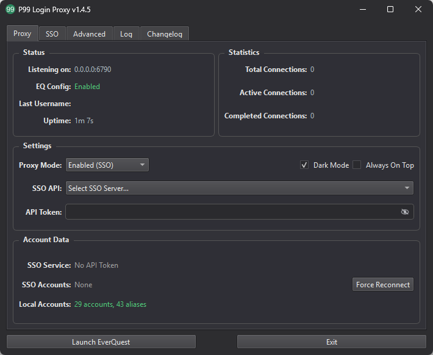

A lightweight, cross-platform replacement for middlemand with shared accounts, local password management, aliases, tags, and character tracking.
Download Now
Use guild-managed EverQuest accounts without distributing their real usernames and passwords.
Always stay current with automatic updates.
Quickly log in to the right account using your character name, customized aliases, and class/role tags.
Works on both Windows and Linux.
Manage personal accounts and aliases locally (credentials never leave your machine).
Guild officers can view detailed login statistics and historical account access details.
Download the latest release and extract it to your preferred location. The proxy will locate your EverQuest installation automatically when possible, or you can select the directory from the Advanced tab.
Run the application, select your SSO server, and paste the API Token provided by the Discord /sso get command. Your accounts, aliases, tags, and characters will synchronize automatically. SSO is optional: personal accounts can be added under SSO → Local Accounts.
Click "Launch EverQuest" (or start the game normally), then log in with an available SSO account, alias, tag, or character name using any password. Local accounts and aliases use the password saved in the proxy.

For support, please file an issue on the GitHub repository or contact @Toald in almost any P99 related Discord server.